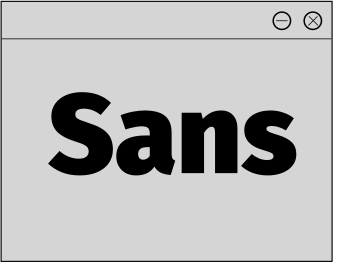

тип:
гуманистический
гротеск
авторы:
Эрик Шпикерман, а также Ральф дю Карруа,
Аня Майнерс, Ботио Никольчев, Патрик Адамчик
заказчик:
Telefónica и Mozilla Corporation
год создания:
2013


гуманистический
гротеск
Эрик Шпикерман, а также Ральф дю Карруа,
Аня Майнерс, Ботио Никольчев, Патрик Адамчик
Telefónica и Mozilla Corporation
2013
Этот гуманистический без засечек шрифт разработал
Эрик Шпикерманн, Ральф дю Карруа, Аня Майнерс,
Ботио Никольчев из Carrois Type Design и Патрик
Адамчик из Mozilla Corporation. Первоначально
по заказу Telefónica и Mozilla Corporation в рамках
совместных усилий при разработке ОС Firefox.
Под названием Fira Mozilla хотела передать
концепции огня, света и радости, но не зависящим
от языка языком, чтобы обозначить глобальный
характер проекта. Fira была выпущена в 2013 году
изначально под Лицензия Apache, а позже
переиздан под Лицензия открытого шрифта SIL.
> > > φ
$
В марте 2018 года было выпущено многоязычное
расширение FiraGo. В гарнитуре, помимо латинского,
греческого и кириллического алфавитов,
используются арабские, деванагари, грузинские,
иврит и тайские буквы. Он был заказан Here
Technologies. FiraGo был выпущен как отдельный
продукт и будет основным семейством шрифтов
в группе. Все будущие обновления Fira Sans будут
основываться на FiraGo, и с 2018 года все семейства
Fira выпускаются компанией bBox Type, которую
возглавляют Ральф дю Карруа и Аня Майнерс.
< < < < > > > >

надежный шрифт
надежный шрифт для чтения
надежный шрифт для маленьких экранов
надежный шрифт для инструкций
универсальный шрифт
практичный шрифт
Fira как «рабочая лошадка».
Она не бросается в глаза, но в силу
своей надежности ежедневно служит
дизайнерам и тпографам.
Fira Sans – более широкая
и спокойная адаптация шрифта
Шпикерманна “Мета”, который
в то время использовался в шрифте
бренда Mozilla. Новый шрифт
оптимизирован для удобочитаемости
на маленьких экранах.